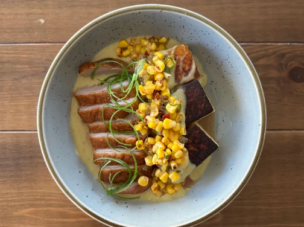
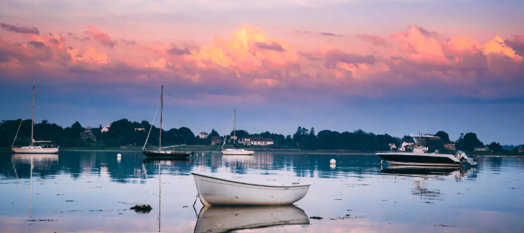

Our Philosophy
Simple. Seasonal. Genuine
We believe the best meals come from the best ingredients, prepared with care, and shared with great company.


Rooted in Community
Local partnerships. Genuine hospitality
We're proud to partner with local farmers, fishermen, and artisans who share our commitment to quality, sustainability, and Maine hospitality.
Our PartnersLocal Partnerships
Sustainable Choices
Supporting Maine
Maine Hospitality
Come for the food, stay for the view.